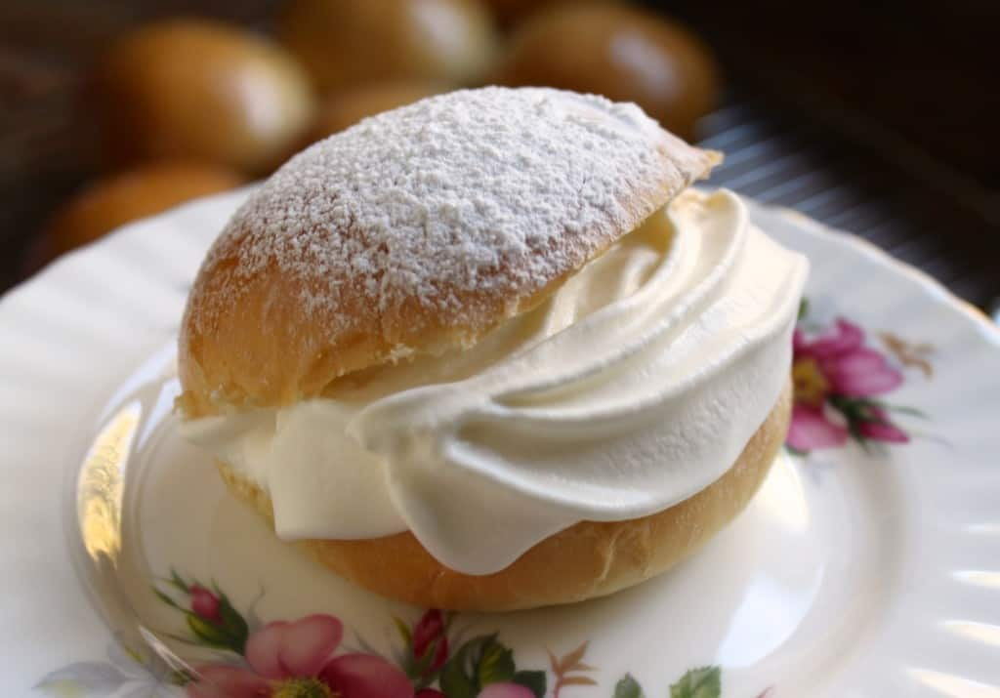

Semla (Swedish Fat Tuesday Buns)

Swedish Dish
Semla are delicious Swedish cardamom-scented, almond paste-filled sweet buns.
Ingredients
Dough Starter:
- 1 cup warm milk (95-100 degrees F)
- 1 package active dry yeast (2 teaspoons)
- 1 ⅓ cups all-purpose flour
Dough:
- 2 cups all-purpose flour
- 7 tablespoons unsalted butter, at room temperature
- ⅔ cup powdered sugar
- 1 large egg
- 2 ½ teaspoons ground cardamom
- 1 teaspoon kosher salt
Egg Wash:
- 1 large egg
- 1 teaspoon water
Almond Filling:
- 14 ounces almond paste
- ½ cup powdered sugar
- ⅓ cup milk, or as needed to achieve desired texture
- 1 teaspoon ground cardamom, or to taste
For Serving
- 1 ½ cups heavy cream, whipped
- 2 tablespoons powdered sugar for dusting
Steps:
- Pour milk into the bowl of a stand mixer. Sprinkle yeast on top, followed by 1 1/3 cups flour and mix with a wooden spoon.
Allow to stand until foamy, about 20 minutes.
- Add flour, softened butter, powdered sugar, egg, cardamom, and salt; knead with dough hook (or by hand) until a soft, smooth,
elastic dough forms, 5 to 6 minutes. Transfer dough to a lightly floured surface and shape into a ball. Divide into 12 equal portions.
Using flour as necessary, roll dough under a cupped hand to form perfectly smooth balls.
- Place dough balls evenly on a parchment lined baking sheet, leaving space in between and slightly push down. Dust tops with flour,
and cover with a clean kitchen towel. Let rise in a warm spot until doubled in size, about 2 hours.
- Preheat the oven to 425 degrees F (220 degrees C).
- Stir together egg and water in a small bowl and brush rolls all over with egg wash.
- Bake in the preheated oven until lightly golden, about 12 minutes. Transfer buns onto a wire rack and let cool completely.
- Combine almond paste, powdered sugar, milk, and cardamom in a food processor and blend almond filling until smooth.
- Cut a triangle from the top of the buns, and remove some of the crumbs to make room for the filling. Pipe almond filling into each bun, and top with whipped cream. Place the triangle on top and dust with powdered sugar before serving.
That's all about this delicious recipes
return to the main page